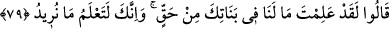
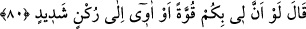

korkun ve misafirlerimin önünde” misafirlerimle ilgili olarak ve onlar hakkında “beni
rezil etmeyin!” Çünkü birinin misafirlerini rezil etmek, o kişiyi rezil etmektir. Nitekim
biriyle ilgili olanlara ikram etmek de o kişiye ikram etmek demektir. “İçinizde aklı
başında” çirkin davranışlardan vazgeçirecek ve gerçeğe iletecek tek “bir adam yok
mu?!” dedi.”
Kâşifî der ki: “Yâni sizden yol bulmuş, hidâyete ermiş bir adam yok mu ki size öğüt
ve nasîhat versin, sizi kötü işlerden uzak tutsun?!”
et-Te’vîlâtü’n-Necmiyye’de şöyle denilir: “Benim nasihatimi kabul edecek ve
dosdoğru bir şekilde Allah’a yönelerek sizi Allah’ın azabından kurtaracak aklı başında
biri yok mu?!” demektir.” Çünkü hak üzere bulunan tek bir adam, büyük bir toplum ve
bir iksir gibidir.
79. Dediler ki: “Senin kızlarında bizim bir hakkımız olmadığını biliyorsun. Ve sen
bizim ne istediğimizi elbette bilirsin.”
“Dediler ki: “Senin kızlarında bizim bir hakkımız” senin kızlarına ihtiyacımız
“olmadığını” onları arzulamadığımızı, dolayısıyla onlarla evlenmeyeceğimizi
“biliyorsun.” Bu sözleri, kadınlarla beraber olmanın âdetleri olmadığını ifade etmek
maksadıyla söylüyorlar. Bu sebepledir ki “biliyorsun” dediler. Çünkü Lût (a.s.) bunu
biliyordu ama özellikle kızlarına ilgi ve arzu duymadıklarını bilmiyordu. Şu ifade bunu
destekler mâhiyettedir: “Ve sen bizim ne istediğimizi elbette bilirsin.” İstediğimiz
erkeklerle birlikte olmaktır.
Bu istekleri, esâsında Cenab-ı Hakk’ın kahrı sebebiyle onlar için ezelî olarak
hazırlanan şeyi, yâni azâba uğrayarak yok olmayı istemiş olmaktadırlar.
80. “Keşke size karşı bir gücüm olsaydı veya güçlü bir kaleye sığınabilseydim!”
dedi.
Lût (a.s.) onların içinde bulundukları azgın davranıştan vazgeçmeyeceklerini
anlayınca, “Keşke size karşı bir gücüm olsaydı veya güçlü bir kaleye
sığınabilseydim!” dedi.” Keşke sizi savacak, size karşı koyacak kadar güçlü olsaydım
yahut da dayanabileceğim, sizi men edebilecek, beni sizden koruyacak, gücü ve
koruması itibariyle bir dağın sarp kısımlarına benzeyen güçlü bir yardımcıya
sığınabilseydim!”
Kâşifî der ki: “Yani Lût (a.s.): “Yani bir aşîret ve bir kabîle ki onları men etmeye